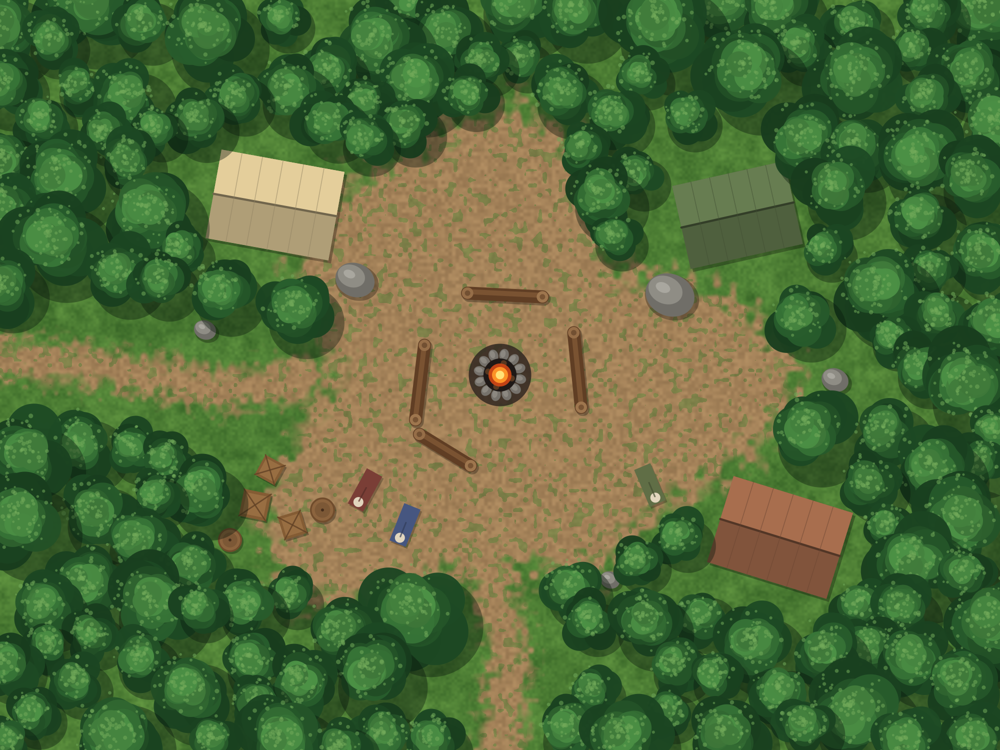
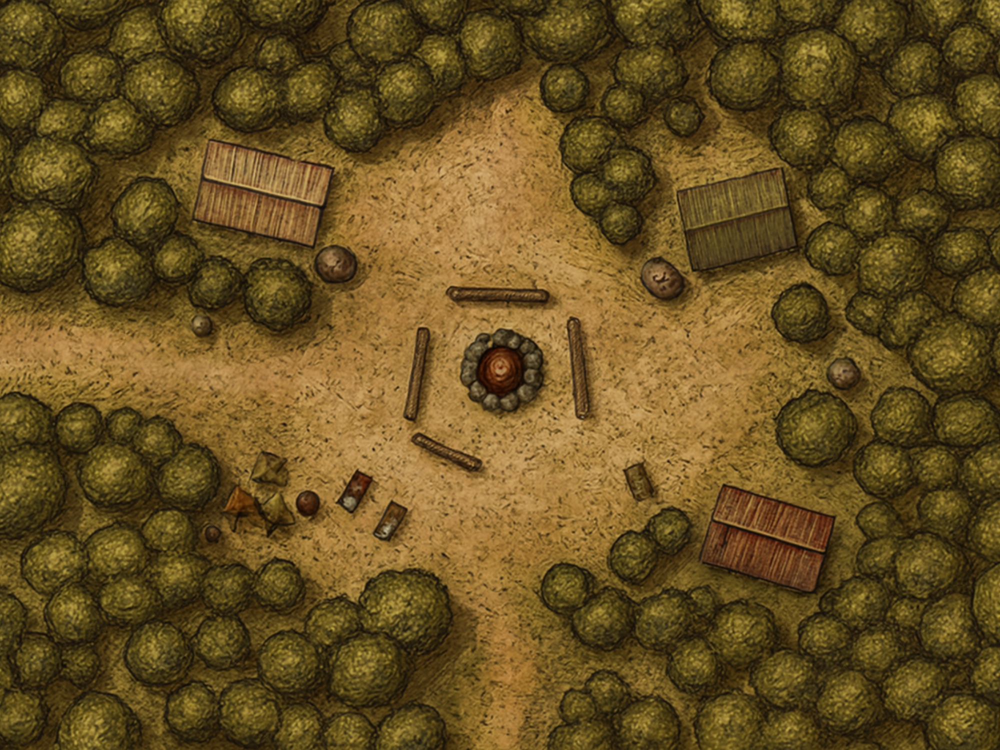
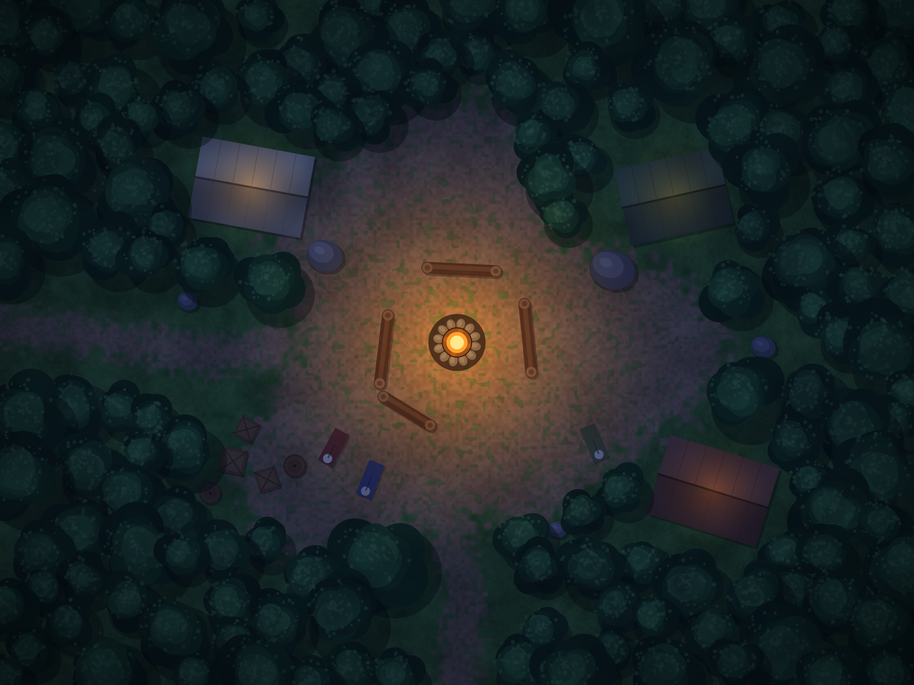
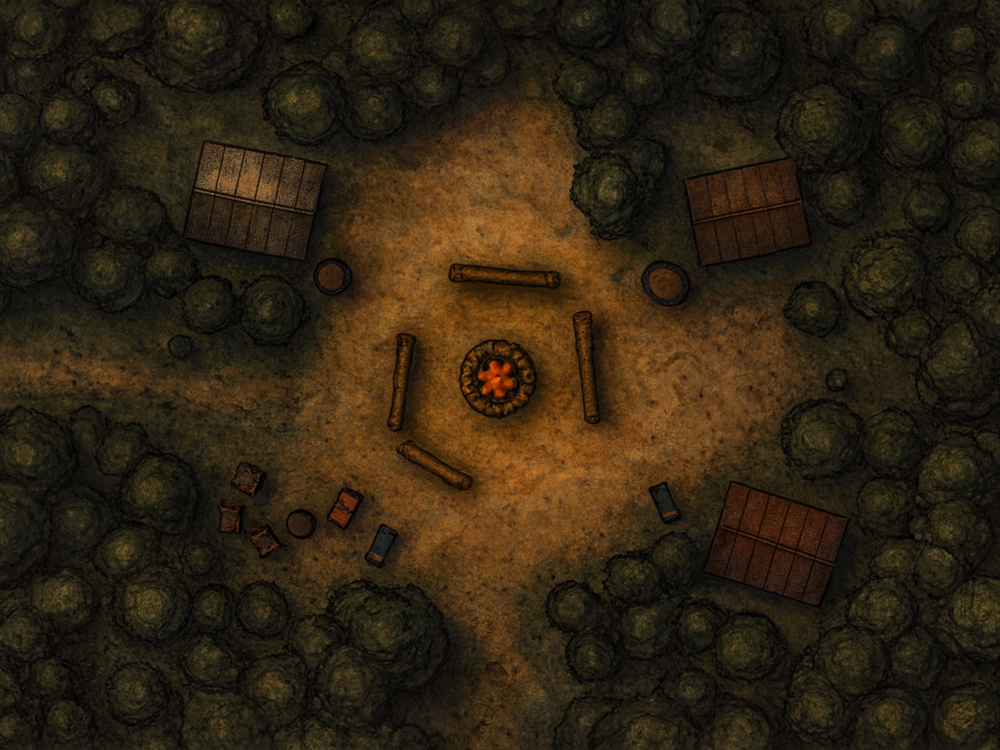

Left, the camps Claude drew in code (flat colours, exact walls and lights). Right, the same two maps repainted by ChatGPT's image editor in the chosen hand-inked sepia style, strictly overhead, with the layout locked. The walls, tents, boulders, fire light and start spot are the originals, laid over the new picture unchanged. Try a token on each: Token tool, click in the clearing, and watch the fog and the line of sight around the tents.




How it was made: each picture was padded to the editor's 3:2 shape (the extra edges mirror the forest), repainted at 1536 x 1024, then cropped and scaled back to 2000 x 1500 (scripts/fit-picture.mjs, scripts/openai-repaint.mjs, about $0.07 each). The walls drift up to about 25 pixels (half a square is 25 pixels) at the tents.